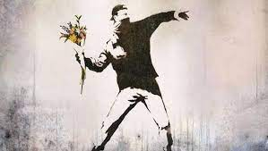
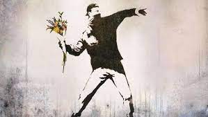

Bansky

Vida
Banksy es el seudónimo de un artista británico llamado Robbie Banks, que posiblemente haya nacido en el entorno de Bristol a mediados de la década de 1970. Participó en el documental Salida por la tienda de regalos, pero se desconocen otros detalles de su biografía.
Obra
 
